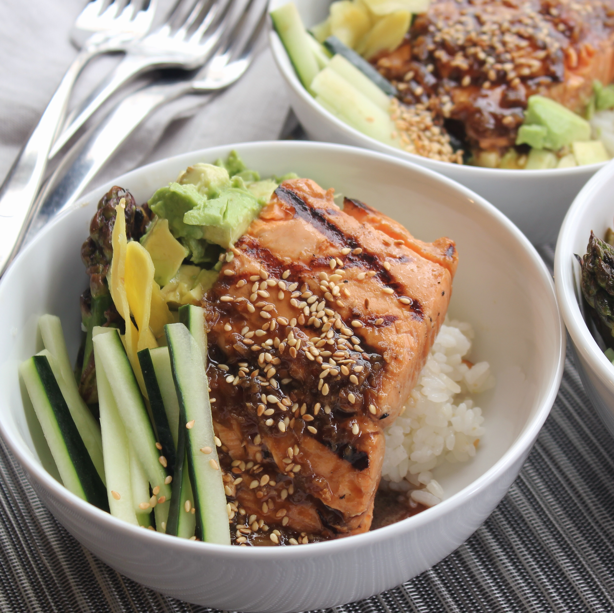

Grilled Salom Sushi Rice Bowl

Description
If you like seared salmon sushi (aburi salmon) at sushi bar, you are going to love this easy and fancy 10 minute salmon rice bowl.
Sear the fresh salmon slices with a blowtorch, enjoy the sizzling sound, the lightly caramelized sauce, the custard like hot spring egg, and the just-right cooked salmon that melt in your mouth.
Description
- 1 cup cooked rice – warm
- 1½ tbsp sushi vinegar
- 4 oz skinless fresh salmon filet
- mayonnaise
- okonomi sauce
- ½ avocado – cut into ½ cubes (optional)
- 1 egg (optional)
- 1 tsp light soy sauce
Steps
- Add 1 cup of warm cooked rice and 1 ½ tbsp of sushi vinegar to a large bowl. Mix well, transfer the rice to a serving plate.
- Shape the rice into a donut shape.
- Hold a knife at a 45° angle to the cutting board, slice a 4oz salmon filet into 10 to 12 thin slices. Arrange the salmon slices in a single layer on top of the rice.
- Use a kitchen torch to sear each slice of the salmon for about 3 seconds, until the salmon slice is sizzling with oil releasing from the surface.
- Drizzle sauce of your choice over the seared salmon. I used mayonnaise and okonomi sauce. You may want to use one light color sauce, and one dark color sauce for the best looking and taste.
- Put avocado cubes in the center of the rice. Use a kitchen torch to sear the sauce for about 15 seconds until it’s sizzling and slightly caramelized.
- Crack the soft cooked egg on the top of avocado cubes. Drizzle 1 tsp of light soy sauce on the egg.
- Serve immediately. Use a spoon to get some rice, a slice of salmon, a piece of avocado, dip some egg yolk, then enjoy how every ingredient melts in your mouth.